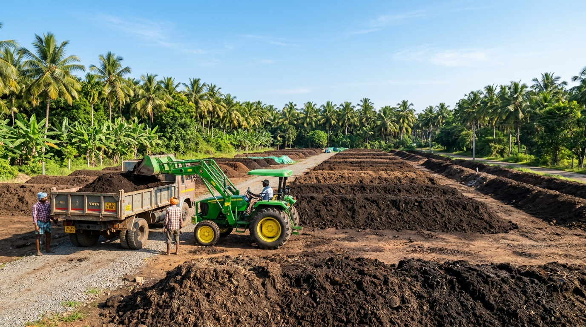
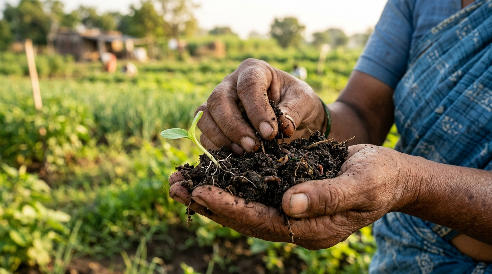

Specialized Organic Fertilizer & Field Services
From supplying high-tonnage aged natural manures to diagnostic soil health restoration and on-field agronomy consultations, we provide an end-to-end framework for sustainable farm profitability.

1. Organic Fertilizer Supply
We formulate and deliver a comprehensive range of premium biological plant foods—including Eisenia fetida vermicompost, cold-pressed pure neem cake, crushed bone meal, and organic bio-potash.
- Custom packaging options: 5kg, 25kg, 50kg bags, or 1-ton jumbo totes.
- Verified NPK ratios stamped on every bag with lot test certificates.
- Formulations calibrated for vegetables, paddy, plantation crops, and horticulture.

2. Natural Manure Supply
We cure raw livestock wastes into sweet-smelling, weed-seed-free, aged organic humus. Sourced exclusively from healthy grass-fed cattle and naturally managed poultry units.
- 180-day aged cow dung compost with balanced C:N ratio (<20:1).
- Dehydrated pathogen-free poultry manure rich in natural nitrogen & calcium.
- Screened through 4mm vibratory trommels for clump-free manual or mechanical spreading.

3. Bulk Order Supply & Farm Logistics
Designed for commercial plantations, large-scale orchards, corporate organic farms, and Farmer Producer Organizations (FPOs). We coordinate prompt door-delivery from single 10-wheel tipper trucks (15-20 MT) to multi-train wagon allocations.
- Weighbridge-certified dispatch slips with moisture compensation guarantee.
- Weatherproof heavy tarpaulins preventing rain damage during transit.
- Bulk commercial price tiers with flexible dispatch scheduling over the sowing season.

4. Soil Improvement Solutions
Is your land suffering from high salinity, low organic carbon (<0.5%), or heavy compaction? Our soil remediation team conducts detailed diagnostic field assessments to build a customized organic rehabilitation regime.
- 14-parameter soil laboratory analysis (pH, EC, Organic Carbon, Macro & Micro Nutrients).
- Tailored saline soil buffering with calcium-rich organic amendments.
- Earthworm inoculation and microbial fungal mycorrhizae repopulation.

5. Organic Farming & Transition Support
Transitioning from conventional chemical farming to certified organic cultivation requires careful nutrient planning to avoid harvest dips. Our veteran field agronomists walk with you through every step of your 3-year transition cycle.
- Crop-specific seasonal nutrition calendar (basal, vegetative, and flowering stages).
- Natural pest deterrence techniques using botanical cakes and herbal decoctions.
- Full compliance documentation support for organic export certification (NPOP / EU standards).